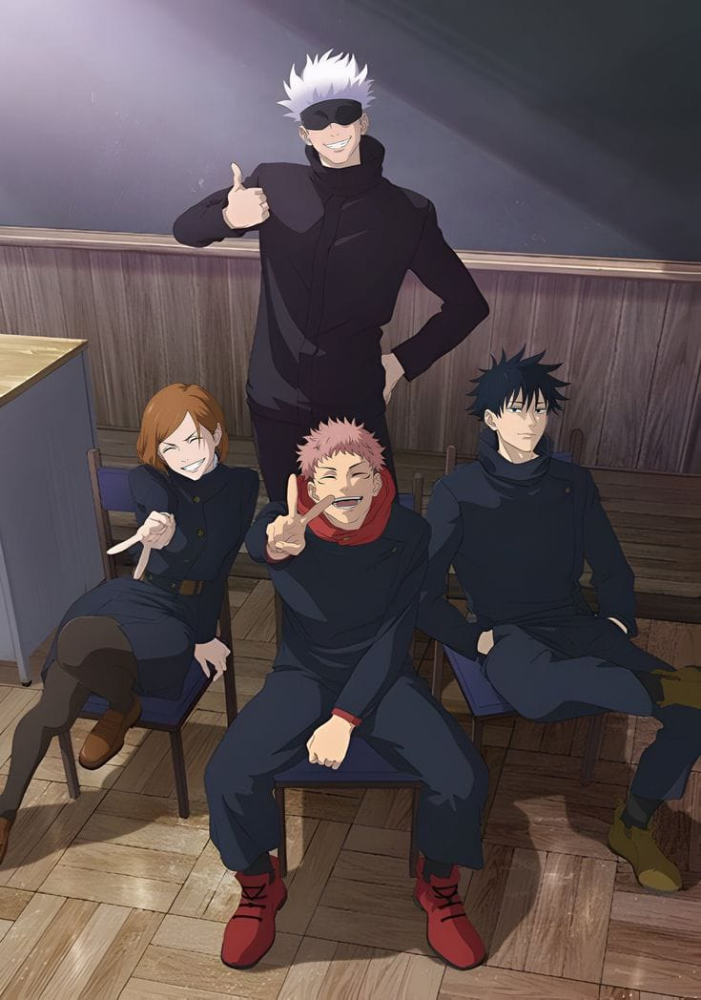

JUJUTSU KAISEN

Yuji Itadori, siswa SMA dengan kekuatan fisik luar biasa, hidup bersama kakeknya yang sakit. Sebelum meninggal, sang kakek berpesan agar Yuji menggunakan kekuatannya untuk menolong orang lain. Suatu hari, klub supranatural di sekolahnya membuka segel jari Ryomen Sukuna, artefak terkutuk yang memanggil roh jahat. Untuk menyelamatkan teman-temannya, Yuji menelan jari itu dan menjadi inang Sukuna, Raja Kutukan. Ajaibnya, Yuji masih bisa mengendalikan tubuhnya. Ia kemudian dibawa oleh penyihir kuat Gojo Satoru ke Sekolah Jujutsu Tokyo untuk menentukan nasibnya.
Yuji dijelaskan bahwa ia kini wadah Sukuna dan harus dieksekusi, tapi Gojo menawarkan pilihan: bantu mengumpulkan semua 20 jari Sukuna, lalu baru dieksekusi agar Sukuna musnah selamanya. Yuji menerima tugas itu demi menolong orang lain, sesuai pesan kakeknya. Ia pun resmi menjadi murid Sekolah Jujutsu Tokyo dan bertemu rekan barunya, Fushiguro Megumi dan Kugisaki Nobara. Mereka membentuk tim tahun pertama penyihir Jujutsu di bawah bimbingan Gojo.
Misi pertama Yuji, Megumi, dan Nobara dimulai. Mereka menyelidiki kutukan di gedung terbengkalai dan menemukan roh-roh jahat. Nobara menunjukkan tekniknya dengan palu dan paku, sementara Yuji bertarung menggunakan kekuatan fisiknya. Namun, muncul kutukan kuat yang membuat Yuji terpaksa memanggil kekuatan Sukuna. Setelah mengalahkan musuh, Sukuna mengambil alih tubuh Yuji dan menolak mengembalikannya, menandai awal konflik besar antara Yuji dan Raja Kutukan di dalam tubuh yang sama.
Episode 4-8: Latihan dan Ujian Pertama
YSetelah Sukuna mengambil alih tubuh Yuji, ia bertarung dengan Fushiguro Megumi. Sukuna memperlihatkan kekuatan luar biasa dan menghancurkan kutukan dengan mudah, namun juga mempermainkan Megumi. Saat Yuji akhirnya merebut kembali kendali tubuhnya, ia sudah terlambat — tubuhnya hancur dan ia tewas sementara.
Gojo kemudian menjelaskan kepada para guru bahwa Yuji masih bisa diselamatkan karena tubuhnya menampung Sukuna. Di sisi lain, Kugisaki Nobara dan Fushiguro mulai menerima kenyataan bahwa rekan mereka mungkin sudah mati.

Sementara Yuji tidak sadarkan diri di dunia dalam antara dirinya dan Sukuna, Gojo Satoru berhadapan dengan kutukan tingkat tinggi bernama Jogo, makhluk yang memiliki bentuk seperti gunung berapi dan kebencian terhadap manusia. Pertarungan Gojo dan Jogo menunjukkan betapa luar biasanya kekuatan Gojo — ia memperlihatkan Domain Expansion: Infinite Void, teknik ruang tanpa batas yang membuat lawan tak bisa bergerak. Gojo menang telak dan memperingatkan bahwa kutukan tingkat tinggi mulai bergerak menyerang dunia manusia.
Yuji ternyata masih hidup berkat Gojo yang menyelamatkannya. Ia dibawa untuk berlatih mengendalikan energi kutukan, karena hingga kini ia hanya mengandalkan kekuatan fisiknya. Gojo menyuruhnya belajar menyeimbangkan emosi sambil menonton film lucu dan menegangkan agar bisa mengontrol energi negatif. Sementara itu, di sisi lain kota, muncul sosok baru bernama Mahito — kutukan berwujud manusia yang senang memanipulasi jiwa dan tubuh manusia, menciptakan monster dari korban manusia biasa.
Yuji dikirim dalam misi bersama Nanami Kento, mantan pegawai kantoran yang kini menjadi penyihir Jujutsu. Nanami adalah sosok serius dan logis, berbeda dengan gaya bebas Gojo. Mereka menyelidiki kasus pembunuhan brutal yang ternyata dilakukan oleh Mahito, yang bereksperimen mengubah manusia menjadi makhluk kutukan. Dalam misi ini, Yuji mulai memahami betapa mengerikannya dunia penyihir — di mana kematian dan penderitaan manusia biasa adalah hal yang tak bisa dihindari.
Nanami dan Yuji akhirnya berhadapan langsung dengan Mahito. Mahito menunjukkan tekniknya yang mengerikan, Idle Transfiguration, yang bisa memutarbalikkan bentuk tubuh seseorang hanya dengan menyentuh jiwanya. Pertarungan berlangsung sengit. Nanami hampir kalah, tapi Yuji menunjukkan tekad kuatnya untuk melindungi manusia. Mahito sangat tertarik pada Yuji karena ia adalah manusia yang menampung kutukan (Sukuna) — sesuatu yang belum pernah ia temui. Sukuna bahkan sempat berbicara langsung dengan Mahito dalam dunia spiritual dan memperingatkannya untuk tidak menyentuh jiwanya sembarangan. Mahito akhirnya mundur, dan Yuji berhasil selamat, tapi ia mulai menyadari bahwa jalan sebagai penyihir Jujutsu penuh penderitaan dan kematian.

Pertarungan Yuji dan Nanami melawan Mahito semakin intens. Mahito memperlihatkan kekuatan sejatinya sebagai kutukan yang bisa memanipulasi bentuk jiwa, membuat tubuh manusia berubah menjadi monster. Nanami terluka parah, sementara Yuji menyaksikan banyak korban tewas akibat kekuatan Mahito. Di tengah pertempuran, Sukuna menolak membantu Yuji, menunjukkan bahwa ia tidak peduli pada manusia. Akhirnya, Nanami menggunakan teknik Domain sementara untuk menjebak Mahito, tapi Mahito berhasil melarikan diri. Episode ini menegaskan bahwa Yuji semakin sadar akan kerasnya dunia penyihir dan mulai bersumpah untuk tidak membiarkan kematian sia-sia.
Setelah kejadian Mahito, Yuji kembali ke Sekolah Jujutsu Tokyo. Gojo memberi tahu bahwa akan diadakan pertandingan persahabatan antara Sekolah Tokyo dan Sekolah Kyoto, yang disebut Goodwill Event. Namun, para guru di Kyoto memandang Yuji sebagai ancaman karena ia adalah wadah Sukuna. Mereka diam-diam berencana membunuh Yuji saat pertandingan berlangsung. Sementara itu, murid-murid Kyoto diperkenalkan: Toudou Aoi, penyihir kuat yang mengidolakan wanita berkarakter, dan Mai Zenin, saudara perempuan Maki yang sinis. Yuji akhirnya bertemu kembali dengan teman-temannya, Fushiguro dan Nobara, yang kaget mengetahui ia masih hidup.
Pertandingan antar sekolah dimulai. Gojo memberi semangat kepada tim Tokyo yang terdiri dari Yuji, Fushiguro, Nobara, Maki, Panda, dan Inumaki. Tujuan pertandingan ini sebenarnya untuk meningkatkan kemampuan kerja sama dan melatih mereka menghadapi kutukan tingkat tinggi. Namun, bagi pihak Kyoto, ini kesempatan untuk menyingkirkan Yuji. Yuji bertekad menunjukkan bahwa dirinya tidak dikendalikan oleh Sukuna dan pantas diakui sebagai penyihir Jujutsu sejati.

Saat pertandingan baru dimulai, sekolah Kyoto menyerang tim Tokyo secara langsung. Toudou langsung menghadapi Yuji dan mengujinya dengan pertanyaan konyol: “Tipe wanita seperti apa yang kamu suka?” Yuji menjawab dengan polos, “Aku suka perempuan dengan kepribadian yang kuat seperti Jennifer Lawrence.” Jawaban itu membuat Toudou langsung menyukainya dan mereka menjadi sahabat instan di tengah pertempuran! Namun suasana berubah ketika kelompok kutukan musuh menyerang arena pertandingan. Kutukan kuat bernama Hanami muncul dan menyerang semua siswa tanpa pandang bulu. Pertandingan pun berubah menjadi pertempuran nyata melawan kutukan.
Seluruh murid dari kedua sekolah terpaksa bekerja sama untuk melawan Hanami. Gojo yang berada di luar area segera menyadari adanya penghalang kutukan yang mencegahnya masuk, dibuat oleh kelompok Mahito dan Geto. Hanami adalah kutukan yang menyerap energi kehidupan dan alam, membuatnya sangat sulit dikalahkan. Fushiguro, Maki, Inumaki, dan Panda berjuang keras untuk menahan serangan Hanami sampai Gojo bisa menembus penghalang. Ketika Gojo akhirnya masuk, ia menggunakan teknik pamungkas “Hollow Purple”, menghancurkan area luas dan memaksa musuh kabur. Meskipun pertandingan berakhir kacau, kerja sama antara murid Tokyo dan Kyoto membuktikan kekuatan dan tekad mereka sebagai penyihir muda.
Kembali kemenu utama klik link di bawah
Kembali ke menu utama